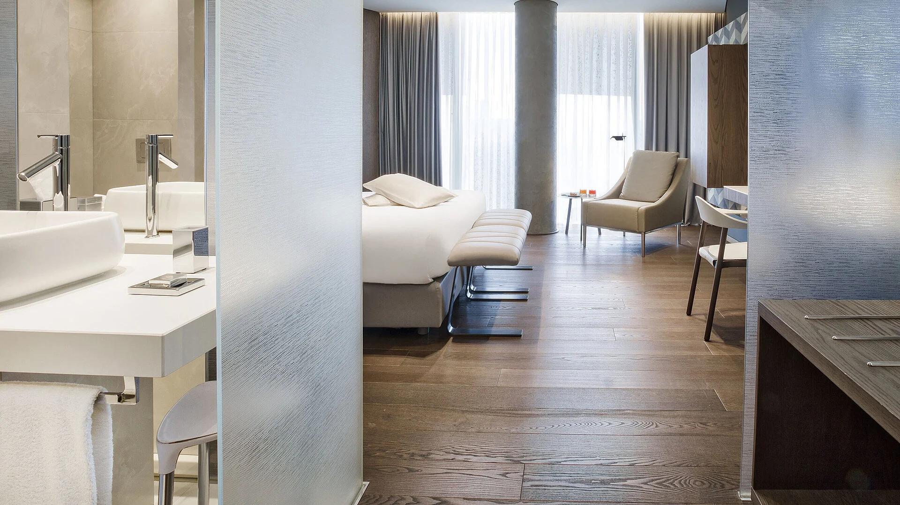
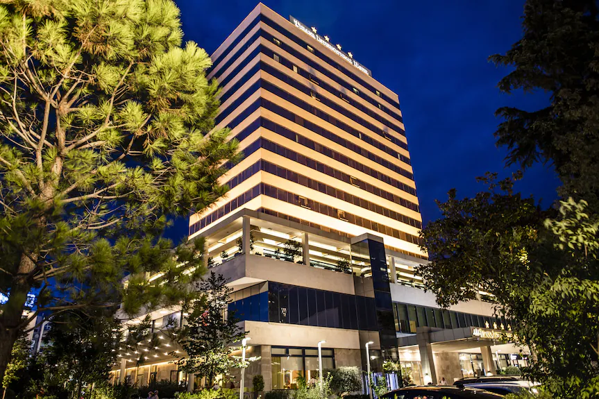
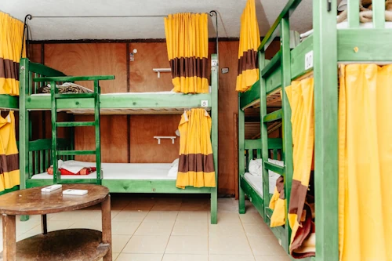
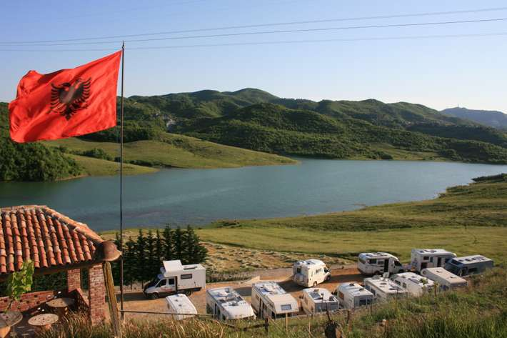

Les hébergements à Tirana
Hôtels, auberge de jeunesse ou camping : où dormir pendant le voyage
Tirana propose des hébergements pour tous les budgets, du grand hôtel de luxe au camping. Voici quatre propositions, de la plus chère à la moins chère.
Découvrez les meilleurs hebergements de genève
Tirana propose des hébergements pour tous les budgets, du grand hôtel de luxe au camping. Voici quatre propositions, de la plus chère à la moins chère.



